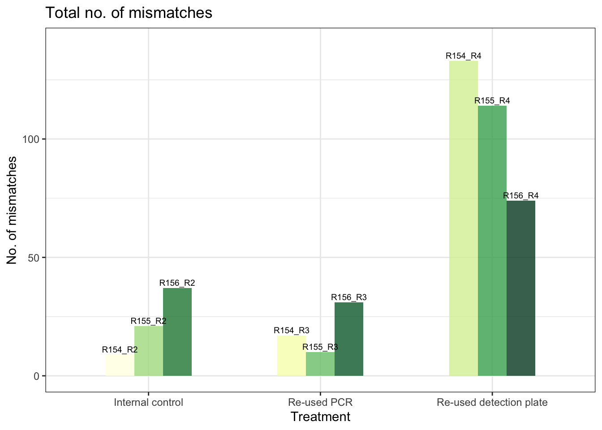
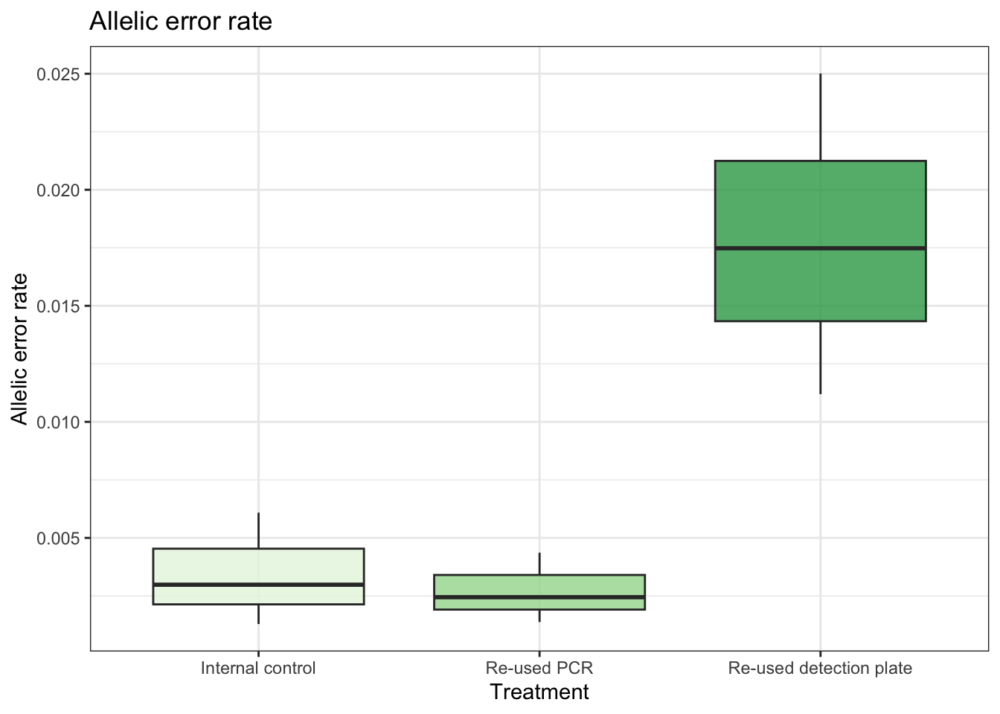
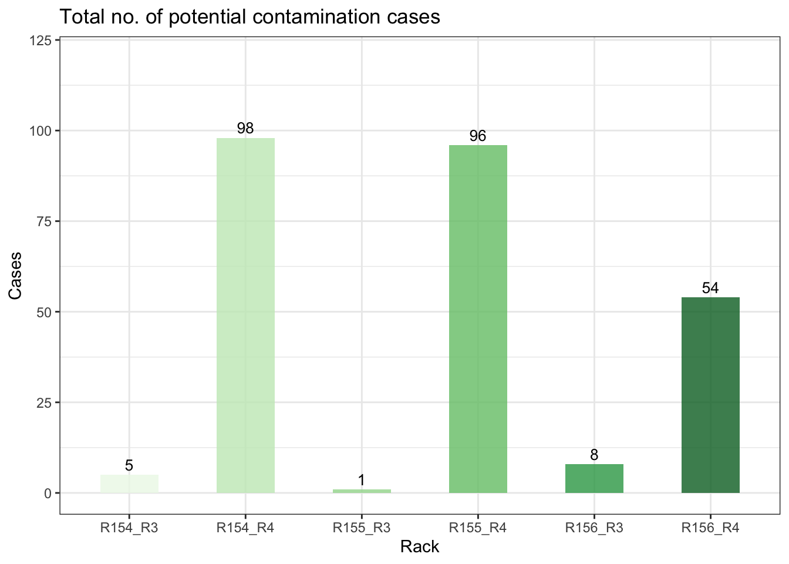

| Mix | R154_R1 | R154_R2 | R154_R3 | R154_R4 | R155_R1 | R155_R2 | R155_R3 | R155_R4 | R156_R1 | R156_R2 | R156_R3 | R156_R4 |
|---|---|---|---|---|---|---|---|---|---|---|---|---|
| Mix1 | 108 | 88 | 58 | 1014 | 8 | 26 | 50 | 66 | 40 | 44 | 52 | 66 |
| Mix2 | 60 | 40 | 60 | 162 | 14 | 40 | 12 | 158 | 46 | 44 | 60 | 102 |
| Mix3 | 36 | 58 | 52 | 108 | 14 | 31 | 26 | 112 | 28 | 26 | 50 | 84 |
| Mix4 | 40 | 32 | 42 | 548 | 30 | 22 | 10 | 96 | 42 | 1140 | 44 | 52 |
| Mix5 | 64 | 78 | 76 | 186 | 10 | 224 | 16 | 430 | 52 | 52 | 70 | 406 |
| Total | 308 | 296 | 288 | 2018 | 76 | 343 | 114 | 862 | 208 | 1306 | 276 | 710 |
Sustainable genetics project
Description
Scientific research is a massive endeavor, consuming vast quantities of single-use plastics. The sustainable genetics project aim to empirically test the re-usability of lab plastic wear, specifically the plastic racks used for PCRs and detection. The project was based around the protocol for Antarctic fur seal genotyping using microsatellites. In this protocol, extracted DNA is first amplified using PCR and since transfered to detection plates for sequencing. The plates used for detection contain only a small diluted concentration of DNA, while the PCR plates have been used in the PCR process and therefore contain a high concentration of DNA. Therefore, we assume that the potential risk of contamination from a previously used plate would be higher in the PCR step.
Packages
Methods
The 274 samples were collected from Bird Island, South Georgia (54°00024.800 S, 38°03004.100 W) during the austral summer of 2020-2021. Tissue samples were collected from the flipper or umbilical cord of Antarctic fur seal pups and stored in 20% dimethyl sulphoxide saturated with sodium chloride at -20°C. The DNA was extracted using a standard chloroform-isoamylalcohol protocol and genotyped at 39 microsatellite loci separated into 5 mixes for improved scoring. PCR amplification was performed using a Type It Kit (Qiagen) with the following program:
| Stage | No. of cycles | Temperature (°C) | Duration | Process |
|---|---|---|---|---|
| 1 | 1 | 94 | 5 minutes | Heat up |
| 2 | 28 | 94 | 30 seconds | Denaturation |
| 60/53 | 90 seconds | Annealing | ||
| 72 | 30 seconds | Extension | ||
| 3 | 1 | 60/53 | 30 minutes | Annealing |
| 4 | 1 | 10 | hold | Cool down |
Note: Annealing temperatures are mastermix-specific.
The PCR product was transferred to and diluted on detection plates before being resolved by electrophoresis on an ABI 3730xl capillary sequencer (Applied Biosystems, Waltham, MA, USA). Each plate contained three positive controls to ensure standardisation of microsatellite scoring across plates. Allele sizes were scored automatically using GeneMarker v. 2.6.2 (SoftGenetics, LLC., State College, PA, USA) and manually inspected and corrected when necessary.
To assess the re-usability of both PCR plates and detection plates, the samples were placed on a master plate from which the samples were transferred to PCR plates. The samples were distributed on a total of 3 master plates. The samples were subjected to four treatments: standard procedure, internal control, re-used PCR plate and re-used detection plate. This is illustrated by Figure 1. The re-used plates all originated from the ‘standard procedure’ round. Thereby, we could ensure knowledge of the sample previously contained within a specific well. Following standard procedure, any locus with more than 20% missing data is gapfilled separately to minimize missing data.

Washing protocol
After the initial use, the racks were washed using the following steps. First, each plate was individually rinsed with distilled water and emptied 10 times, before submerging in soap water for two hours. After soaking, each plate was again rinsed and emptied before left on a paper towel over night to dry.
Quantification of genotyping errors
To estimate the genotyping error rate, the ‘standard procedure’ treatment was first compared to the ‘internal control’ treatment to establish a baseline error rate. Any discrepancy between the two sets of genotypes was flagged as an error. The error rate was evaluated both for each allele and for the genotype on a locus-specific level and across all loci. After establishing a baseline error rate, the same comparision was preformed between the ‘standard procedure’ treatment and the two re-use treatments independently. In these cases, any discrepancy was first explored for the possibility of contamination, before flagged as an error, if no contamination was detectable.
Identification of contamination
The samples were each repeated for all four treatments. In the case of a discrepancy between the original genotype and the ‘re-used PCR plate’ or ‘re-used detection plate’ treatment, the new genotype was compared to the genotype of the individual previously genotyped in the same well. If the genotype matched the genotype of the original individual, the mis-matched was marked as contamination.
Data
The data for this project are the raw sequencing reads from the ABI 3730xl capillary sequencer. Each files is identified with the following name structure: RackX_mixY_Z. Where X gives the rack number, Y the mix and Z the treatment (1 = standard procedure, 2 = internal control, 3 = Re-used PCR plate and 4 = Re-used detection plate).
Before starting the error rate evaluation, the no. of genotypes that could no be scored for each round and mix per rack is tabulated (See Table 2).
In Figure 2, the location of the missing data on the plate is visualized. More purple hues correspond to more missing loci for that particular samples, and we can conclude that certain samples seem to have failed almost completely. This could hint at poor DNA quality. The data is arranged in the plot to match the layout of the actual plate. Through visual inspection, there might be a slight tendency for the missing loci to be located more towards the edges of the plates compared to the center.

Error rate calculation
The error rate is calculated by comparing all scored alleles and genotypes from the standard procedure within one rack with the other treatments starting with the internal control. The internal control is included as a baseline for error rates to have a comparable metric to evaluate if the reused plates inflate the error rate.
| Rack 1 | Rack 2 | Treatment | No. of mismatches | Allelic error rate |
|---|---|---|---|---|
| R154_R1 | R154_R2 | Internal control | 9 | 0.0012890 |
| R155_R1 | R155_R2 | Internal control | 21 | 0.0029825 |
| R156_R1 | R156_R2 | Internal control | 37 | 0.0060875 |
| R154_R1 | R154_R3 | Re-used PCR | 17 | 0.0024453 |
| R155_R1 | R155_R3 | Re-used PCR | 10 | 0.0013759 |
| R156_R1 | R156_R3 | Re-used PCR | 31 | 0.0043613 |
| R154_R1 | R154_R4 | Re-used detection plate | 133 | 0.0250094 |
| R155_R1 | R155_R4 | Re-used detection plate | 114 | 0.0174793 |
| R156_R1 | R156_R4 | Re-used detection plate | 74 | 0.0111952 |
Inspect mismatches for contamination
The comparison between the different treatments and the standard procedure yielded a list of mismatches. To identify whether these mismatches in the case of the ‘re-used PCR plate’ and ‘re-used detection plate’ treatment was due to contamination from the samples previous found in the same well, the new genotype was compared to the original genotype scored from that well. If the genotype matched the original genotype, the mis-match was marked as potential case of contamination.
| Rack | Control | Cases |
|---|---|---|
| R154_R3 | R156_R1 | 5 |
| R154_R4 | R156_R1 | 98 |
| R155_R3 | R154_R1 | 1 |
| R155_R4 | R154_R1 | 96 |
| R156_R3 | R155_R1 | 8 |
| R156_R4 | R155_R1 | 54 |
Analysis
To determine if treatment had a significant effect on the following three measures; no. of mismatches, allelic error rate and potential cases of contamination, we performed ANOVAs followed by a post hoc test for pairwise comparisons for the three treatment groups measured against the standard procedure treatment.
Df Sum Sq Mean Sq F value Pr(>F)
Treatment 2 14863 7431 18.29 0.0028 **
Residuals 6 2437 406
---
Signif. codes: 0 '***' 0.001 '**' 0.01 '*' 0.05 '.' 0.1 ' ' 1 Tukey multiple comparisons of means
95% family-wise confidence level
Fit: aov(formula = `No. of mismatches` ~ Treatment, data = Mismatches)
$Treatment
diff lwr upr
Re-used detection plate-Internal control 84.66667 34.17376 135.15958
Re-used PCR-Internal control -3.00000 -53.49291 47.49291
Re-used PCR-Re-used detection plate -87.66667 -138.15958 -37.17376
p adj
Re-used detection plate-Internal control 0.0051045
Re-used PCR-Internal control 0.9819009
Re-used PCR-Re-used detection plate 0.0042908The total no. of mismatches between the standard procedure and the additional treatments could be significantly determined by treatment. Further exploration using a Tukey pairwise comparison revealed that this treatment effect was driven by a significant difference in no. of mismatches in the ‘re-used detection plate’ treatment when compared to both the internal control and the re-used PCR treatment. When comparing those two treatments to eachother, no significant difference could be found. The same was true for the error rate.
Df Sum Sq Mean Sq F value Pr(>F)
Treatment 2 0.0004391 2.196e-04 11.75 0.00841 **
Residuals 6 0.0001121 1.868e-05
---
Signif. codes: 0 '***' 0.001 '**' 0.01 '*' 0.05 '.' 0.1 ' ' 1 Tukey multiple comparisons of means
95% family-wise confidence level
Fit: aov(formula = `Allelic error rate` ~ Treatment, data = Mismatches)
$Treatment
diff lwr
Re-used detection plate-Internal control 0.0144415910 0.003613101
Re-used PCR-Internal control -0.0007255239 -0.011554014
Re-used PCR-Re-used detection plate -0.0151671149 -0.025995605
upr p adj
Re-used detection plate-Internal control 0.025270081 0.0151155
Re-used PCR-Internal control 0.010102966 0.9770594
Re-used PCR-Re-used detection plate -0.004338625 0.0120883To explore the effect of treatment on the number of potential contamination cases, a non-parametric wilcoxon test was used.
Note: the test is performed on only one case of the ‘re-used detection plate’ treatment and therefore not yet considered informative.
Wilcoxon rank sum exact test
data: Cases by Treatment
W = 6, p-value = 0.5333
alternative hypothesis: true location shift is not equal to 0Results
Will come later
Figure 3 shows the total no. of mismatches observed when comparing the standard procedure treatment of each rack with the other treatments.


We found a total of 446 mismatches between all treatments. A subset of these (262) were potential contamination cases.
